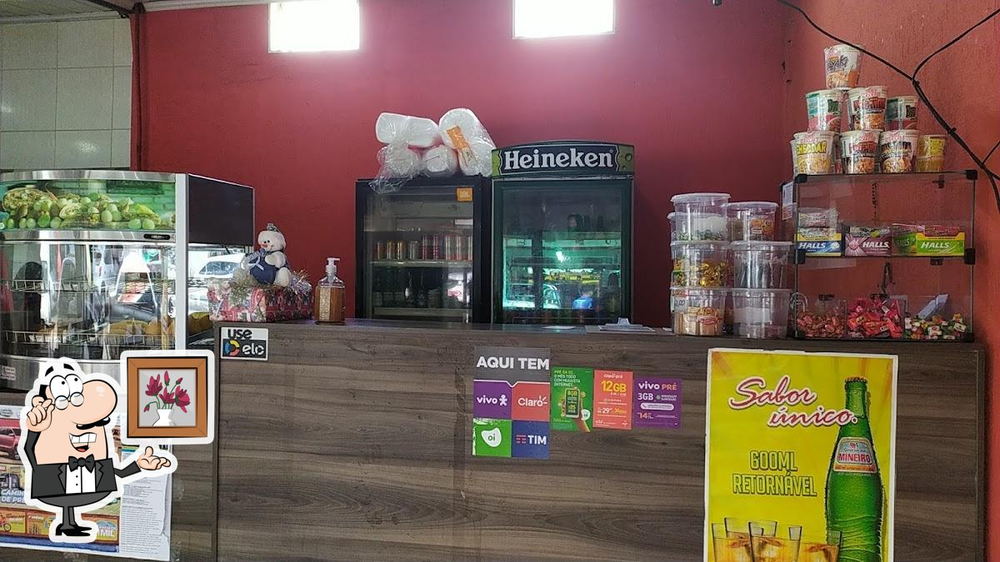

Bem-vindo ao Espaço Oliveira
O Espaço Oliveira é um restaurante familiar localizado no centro da tradicional feira de som automotivo, onde o movimento intenso e a energia do evento se combinam com o aroma irresistível de comida caseira. Em meio aos carros personalizados e ao ambiente vibrante da feira, o restaurante se destaca como um espaço acolhedor, feito para quem deseja uma pausa saborosa e confortável. Aqui, cada detalhe — do preparo dos pratos ao atendimento — reflete a dedicação de uma família que construiu o Espaço Oliveira com carinho e paixão pela boa gastronomia.
Nossa História
Desde o início, o Espaço Oliveira se tornou um ponto de encontro para quem aprecia boa comida caseira e um ambiente acolhedor. Inspirado na culinária brasileira e no clima animado da feira de som automotivo, o restaurante valoriza receitas simples, saborosas e preparadas com carinho.
Especialidades Culinárias
Nossa carta celebra a verdadeira culinária brasileira: pratos caseiros bem servidos, preparados com tempero tradicional e aquele sabor que lembra comida feita em casa. Oferecemos opções como carnes na chapa, frango caseiro, acompanhamentos fresquinhos, feijão sempre no ponto, arroz soltinho e saladas preparadas na hora.
Ambiente e Experiência
No Espaço Oliveira, acreditamos que o ambiente faz parte da refeição. Nosso espaço é decorado com elementos rústicos e aconchegantes, inspirados em vilarejos italianos e brasileiros, criando uma atmosfera perfeita para jantares românticos, reuniões familiares ou encontros com amigos.
Estamos abertos de terça a sábado, das 8h às 16h, sempre prontos para receber você com boa comida e um ambiente acolhedor. No Espaço Oliveira, não é preciso fazer reserva — é só chegar e aproveitar! Atendemos visitantes da feira, famílias, grupos de amigos e todos que querem saborear uma refeição caseira de qualidade em meio ao movimento da feira de som automotivo.